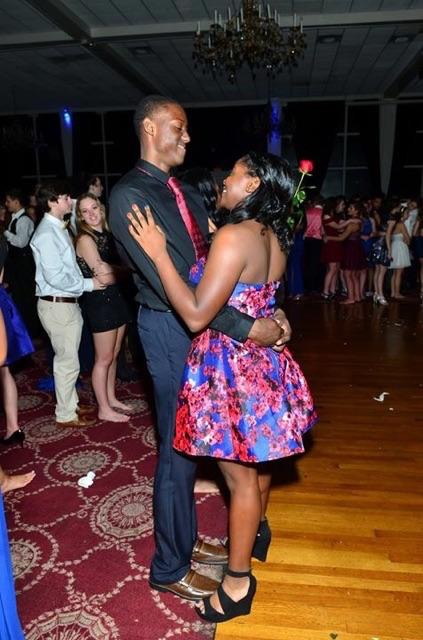

She was born at Kaiser Permanente Hospital in Kaiser Permanete, California on October 17, 2001. She also grew up in California, and moved to Memphis by the start of 8th grade year. When we first met, I immediately knew we had some type of connection. We met at Fullview Baptist Church.
This is Cyrah Nichelle Gipson, aka my Girlfriend/BFF. She has made a huge impact on my life. When I first met her, I was a shy person in general, and didn't like to talk alot. Now 5 in a half months later, I want to talk to everyone. She is a great influence and has a positive attitude.
Cyrah is a very intelligent, beautiful, caring, and loving young woman. She pushes me to do my best in the classroom, along with sports. Ever since my knee surgery in December, she encourages me when I'm sad about the fact that I can't play. She stands for the most high God which is in heaven, and so do I.
Out of alot of people I know, she is one of the only people who believe in my plans for life. She is different than the average girl. She tries her best to make a positive image each day in the classroom for our race. We are both athletes; she swims, and I play basketball.
I have never been to a true dance before I met her. I was a shy person who wasn't willing to dance or talk alot in public. But she had this positive vibe to her that gets me to do it. Our first "dance" was at her birthday party. All I knew how to do was slow dance. But by the time of snowflake, I was willing to actually dance.
I love all of the love and laughter we share. She is 16 years old with a 4.5 Grade Point Average. It is hard having a girlfriend that is smarter than me. I normally am the smart one around my family, but I guess I'm going to have to give her the spotlight. I could not ask for a better girlfriend.